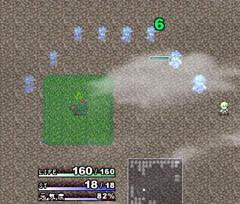

■2014-02-22 (土) 片道+ 34 海外展開準備▼
今週は3/7～9のBitSummitに向けてのメディアキットの準備や
Steamの作業で忙しい場面がありました。
あと各種税務手続きのシーズンなのでそれも進めています。
実は盆と正月がダブルで来るのは2月や3月じゃないでしょうか。
なお、第一次海外展開の準備に関しては少しずつ終わりが見えています。
ただしイベント用の自前の資料に関して言うと、
英作文は完全に機械翻訳で出てきた中から
まともそうなのを選んで入れる作業と化していますけれどね！
「英語」の仕組み自体は割と簡単なはずなので、
あといくつかブレークスルーすればスラスラ読み書きが
できるのかもしれませんが、まだまだそこまでは遠いです。
しかし、変な英文になってることくらいは何となく分かるので、
そこは義務教育に感謝しています！英語はしっかり勉強しましょう！
ある程度読めれば、海外のゲームも気軽に遊べますよ！
そして今週の片道勇者+はインターフェース周りの強化を行っていました。
オプション設定が増えたので初期化する項目を付けたり、
加速モードを実装したりしています。
【加速モード】

加速モード！ これのおかげでかなり
無駄な時間をカットして楽しめるようになりました。
アドバイスくださった皆さま、ありがとうございます！
他にもダメージの文字を色変えして、
プレイヤーが受けたダメージと仲間が受けたダメージを分かりやすくしたりと、
人に見せるにあたってシステム周りの微調整を行っています。
以下は気になった拍手返信です。いつも本当にありがとうございます！
（TRPGページについて）
＞IE8ですがルールページがなんかおかしいです。
＞メニューが本文の上側に表示されてます。 .
修正しておきました！ ご報告ありがとうございます！
＞Steamのライブラリ上の名称がOne Way Heroicsなのは .
＞別にいいんですが、日本語で起動したときのタイトル画面も .
＞One Way Heroicsなんでしょうか？ 例えば、メゾンド魔王は .
＞ライブラリ上ではUnholy Heightsですが、起動するとちゃんと .
＞メゾンド魔王と表示されます。九十九神は99 Spirits（英語版）と
＞Tsukumogami（日本語版）の2種類が登録されます。 .
ご安心ください、日本語版で起動したときのタイトル画面には
「片道勇者 - One Way Heroics - 」と表示されます。
また、購入時のタイトルのテキスト自体は「One Way Heroics」ですが、
日本語モードでSteamにつないだ場合だけストアの「バナー」に
「片道勇者/One Way Heroics」と書かれた画像を表示させる方法が
分かったので、今はそう設定したところです。
Steamの機能で言語別にローカライズできる部分と
そうでない部分があるので、ローカライズできる範囲で
うまくプロモーションしていきたいと思います。
2014-02-22 (土)  カテゴリ: 片道勇者
カテゴリ: 片道勇者
 カテゴリ: 片道勇者
カテゴリ: 片道勇者